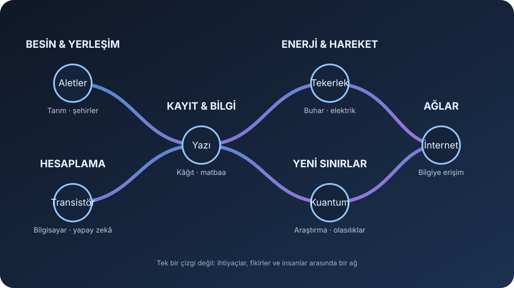

Bir taş alet ile bir akıllı telefon arasında yalnızca binlerce yıl değil, birbirine eklenen sayısız fikir var. Tarım kayıt ihtiyacını, kayıt yazıyı, yazı çoğaltma tekniklerini; elektrik de haberleşme ve hesaplama biçimlerini değiştirdi. Bu harita, insanlık tarihini “en büyük icatlar” sıralaması olarak değil, bir keşfin başka hangi kapıları araladığını izleyerek okumayı öneriyor.

Haritayı nasıl okumalı?
“Keşif” doğada zaten var olan bir olguyu fark etmeyi, “icat” ise bir ihtiyaca yönelik yeni bir araç ya da yöntemin geliştirilmesini anlatır. Gerçek hayatta bu sınırlar her zaman keskin değildir: elektriği insanlar icat etmedi, ama onu üretmek, iletmek ve güvenli kullanmak için geliştirdiğimiz sistemler uzun bir mühendislik tarihinin ürünüdür.
Birçok teknoloji tek bir yerde ve tek bir anda doğmadı. Arkeolojik tarihler yaklaşık aralıklardır; kimi bilgi ve beceriler yazılı kayıtlardan çok önce kuşaktan kuşağa aktarıldı. Bu nedenle aşağıdaki rotalar, bütün kültürleri kapsayan eksiksiz bir liste değil; bağlantıları görünür kılmaya yarayan seçilmiş duraklardır.
1. Besin, alet ve yerleşim: çevreyle kurulan ortaklık
Yontulmuş taşlar, insanların çevrelerindeki malzemeyi bir amaca göre dönüştürmeye başladığının erken izleridir. Kesmek, kazımak ya da parçalamak için yapılan aletler yalnızca “daha güçlü” olmayı sağlamadı; besine erişme, malzeme işleme ve bilgiyi başkasına öğretme biçimlerini de etkiledi. Alet yapımının tarihi tek bir mucide bağlanamaz: her kuşak, öncekinin deneyimini devralıp değiştirir.
Bitki yetiştirme ve hayvanları yönetme ise dünyanın farklı bölgelerinde, farklı zamanlarda gelişti. Daha düzenli besin üretimi bazı topluluklarda yerleşik yaşamı, depolamayı ve iş bölümünü destekledi; aynı zamanda mülkiyet, emek ve kaynak paylaşımıyla ilgili yeni eşitsizlikler ve sorumluluklar doğurdu. Tarım, şehirlerin ya da uygarlığın otomatik bir reçetesi değildi; insanların çevre, iklim ve toplumsal düzenle kurduğu ilişkinin değişmesiydi.
Yerleşimler büyüdükçe ürünleri, vergileri ve takasları kaydetme ihtiyacı arttı. Böylece gündelik yönetim için geliştirilen kayıt pratikleri yazıya ve sayısal düşünmeye giden yolları besledi. İlk şehirlerin nasıl örgütlendiğini Uruk ve ilk şehirleşme yazımızda, kayıt ve yönetim arasındaki bağı ise ilk devlet tartışmasında okuyabilirsiniz.
2. Kayıt, çoğaltma ve iletişim: bilginin yolculuğu
Yazı, insan belleğinin yerini almadı; belleğin taşıyabileceğinden daha fazla bilginin saklanıp başka zamanlara ve yerlere ulaşmasını sağladı. Kil tabletlerdeki hesaplardan mektuplara, hukuk metinlerinden bilimsel gözlemlere uzanan bu değişim, kimin kayıt tutabildiği ve hangi bilginin korunmaya değer görüldüğü sorularını da beraberinde getirdi.
Kâğıt ve baskı teknikleri, metinlerin çoğaltılmasını kolaylaştırdı. Baskı bir anda herkesi okur yapmadı; okuryazarlık, eğitim, dil, maliyet ve iktidar ilişkileri erişimi belirlemeyi sürdürdü. Yine de bir metnin daha fazla kopyasının üretilebilmesi, fikirlerin dolaşım hızını değiştiren güçlü bir eşikti. Bu hikâyede Gutenberg önemli bir isimdir; fakat baskı Doğu Asya’da Avrupa’daki matbaadan yüzyıllar önce kullanılıyordu.
Telgraf, telefon, radyo ve internet, mesajın uzaklıkla ilişkisini adım adım dönüştürdü. İnternet, Web ile aynı şey değildir: internet ağların altyapısı, Web ise bu altyapının üzerinde çalışan bilgi paylaşım sistemlerinden biridir. Bugün erişim daha hızlı olsa da güvenilir bilgiye ulaşmak, mahremiyeti korumak ve çevrimiçi hizmetlere eşit erişim hâlâ toplumsal tercihlere bağlıdır. Dijital kültürün değişimini müziğin dijitalleşmesi ve sosyal medya algoritmaları üzerinden de izleyebilir, dönemin bütünlüklü çerçevesi için Bilgi ve Dijital Çağ yazımıza geçebilirsiniz.
3. Enerji ve hareket: gücü dönüştürmek
Tekerlek, yük taşımayı ve üretimi kolaylaştırdı; fakat her yerde aynı ölçüde yararlı değildi. Uygun yollar, hayvan gücü, malzeme ve coğrafya olmadan tek başına bir tekerlek ulaşım devrimi yaratamazdı. Buhar makinesi de birdenbire ortaya çıkmadı: önceki makineler ve ustaların birikimi üzerine yapılan geliştirmeler, ısının daha verimli biçimde mekanik işe çevrilmesini mümkün kıldı.
Elektrik üretimi ve dağıtım şebekeleri fabrikaların, evlerin ve şehirlerin çalışma ritmini yeniden kurdu. İçten yanmalı motor ve seri üretim ise insanların, malların ve kaynakların hareketini hızlandırdı; bunun karşılığında kent planlaması, trafik güvenliği, yakıt kullanımı ve hava kirliliği gibi sorunlar büyüdü. Otomobilin tek bir kişinin icadı sayılamayacağını arabanın gelişim hikâyesinde ayrıntılı biçimde görebilirsiniz.
Enerji teknolojisini değerlendirirken yalnızca “ne kadar üretiyor?” sorusu yetmez. Hangi kaynakların kullanıldığı, çevresel maliyetin kime yüklendiği ve faydanın kimlere ulaştığı da önemlidir. Nükleer enerjinin sanayi ısısıyla buluştuğu Xuwei projesi, bir teknolojinin vaadiyle henüz kanıtlanmış işletme sonuçlarını ayırmanın neden gerekli olduğunu gösteren güncel bir örnek.
4. Hesaplama ve otomasyon: makineden ağa
Hesaplama araçları, insanların sayıları kaydetme ve işlemleri hızlandırma ihtiyacından doğdu. Elektronik bileşenlerin küçülmesi, özellikle transistörün geliştirilmesi, bilgisayarların daha hızlı ve yaygın hâle gelmesinin önünü açtı. Kişisel bilgisayarlar ve ağlar, hesaplama gücünü büyük kurumların odalarından gündelik yaşama taşıdı; bugün bu altyapı eğitimden sağlık hizmetlerine kadar pek çok alanda kullanılıyor.
Yapay zekâ bu çizginin son durağı değil; mevcut hesaplama, veri ve enerji altyapısının üzerine kurulan yeni bir araçlar ailesi. Bazı görevleri hızlandırabilir, bazı kararları destekleyebilir; ama hatalı sonuç üretebilir, önyargıları yeniden üretebilir ve insan denetimine ihtiyaç duyabilir. Bu yüzden bir sistemi yalnızca ne kadar etkileyici göründüğüyle değil, kimin işini kolaylaştırdığı ve hatasının bedelini kimin ödediğiyle değerlendirmek gerekir. Yapay zekânın düşünme alışkanlıklarımızla ilişkisi bu sorulara yakından bakıyor.
Kuantum bilgisayarlar ise klasik bilgisayarların genel olarak yerini alacak makineler değildir. Araştırmalar, bazı özel problemlerde farklı hesaplama olanakları arıyor; gürültü, hata düzeltme ve ölçeklenme hâlâ temel engeller. Bugünkü ilerlemeyi ve sınırları kuantum bilgisayarlar rehberimizde ayrıntılandırıyoruz.
Haritadaki ortak çizgi: teknoloji insan ilişkilerini de değiştirir
Her yeni araç, yalnızca işi hızlandırmaz; becerilerin, emeğin ve karar gücünün kimler arasında dağıldığını da değiştirebilir. Matbaa bilgiyi çoğaltır ama erişimi tek başına eşitlemez; otomasyon bazı işleri azaltırken yenilerini yaratır; çevrimiçi ağlar uzakları yakınlaştırırken görünmeyen emek ve veri toplama biçimleri üretir. İlerleme, herkes için aynı anda ve aynı yönde yaşanmaz.
Bu yüzden teknoloji tarihini, kaçınılmaz bir “daha iyiye gidiş” öyküsü olarak okumak yerine, her dönemde sorulması gereken sorularla takip etmek daha anlamlı: Hangi ihtiyaç çözülüyor? Yeni imkân kimin için açılıyor? Bedelini kim taşıyor? Ve insanlar bu aracı kendi amaçları için nasıl yeniden şekillendiriyor?
Bu haritadan devam edin
Kaynaklar ve ileri okuma
- Smithsonian Human Origins Program, taş aletlerin arkeolojik kaydı. Stone Tools.
- British Museum, Uruk dönemine ait erken yazı tableti. Collection online.
- Encyclopaedia Britannica, tekerlek, baskı ve buhar makinesi tarihçeleri. Wheel; Printing and publishing; Steam engine.
- Computer History Museum, internetin tarihsel gelişimi. Internet History.
- World Wide Web Consortium (W3C), World Wide Web'in gelişimine ilişkin tarihçe. A Little History of the World Wide Web.
Tarihler, kaynaklarda belirtilen yaklaşık dönemleri ifade eder. Bu seçki bütün toplumların teknoloji tarihini kapsama iddiası taşımaz; rotalar, farklı gelişmeler arasındaki bağlantıları göstermek için hazırlanmıştır.